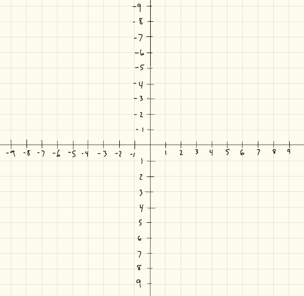
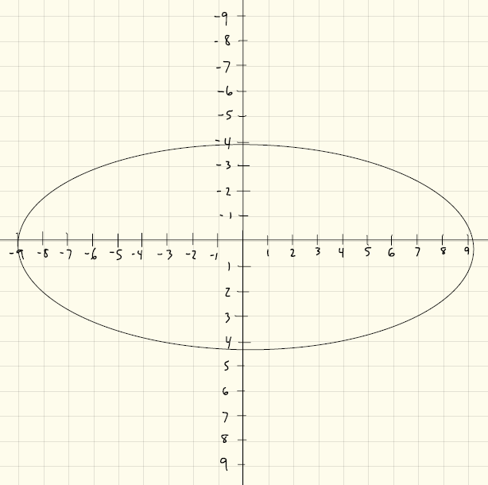
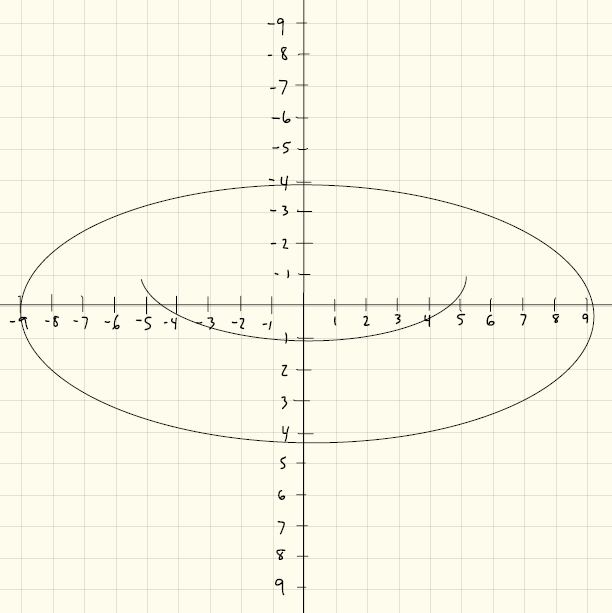

First, recall the y-axis is upside down compared to what we typically learn in school so the number line goes from negative numbers up top to positive numbers down below.

We can think of the first shape as a chassis, the structural form to which we attach other shapes. In this case, we can simply create an ellipse.
ELLIPSE, -90, -40, 180, 80

This is an arc drawn on top of the ellipse.
ARC, -50, -15, 100, 30, 0, PI

This is another arc drawn on top of the ellipse.
ARC, -50, -50, 100, 100, PI, TWO_PI